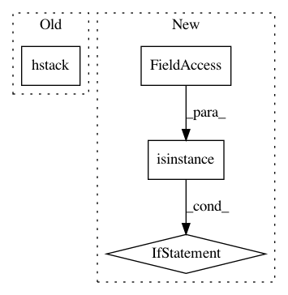

146108a2c027ef2e116236ac8722e00a77103597,thinc/layers/concatenate.py,,forward,#Any#Any#Any#,37
Before Change
def forward(model: Model[InT, OutT], X: InT, is_train: bool) -> Tuple[OutT, Callable]:
Ys, callbacks = zip(*[lyr(X, is_train=is_train) for lyr in model.layers])
widths = [Y.shape[1] for Y in Ys]
output = model.ops.xp.hstack(Ys)
def backprop(d_output: OutT) -> InT:
dY = model.ops.xp.ascontiguousarray(d_output[:, : widths[0]])
dX = callbacks[0](dY)
After Change
def forward(model: Model[InT, OutT], X: InT, is_train: bool) -> Tuple[OutT, Callable]:
Ys, callbacks = zip(*[lyr(X, is_train=is_train) for lyr in model.layers])
if isinstance(Ys[0], list):
return _list_forward(model, X, Ys, callbacks, is_train)
else:
return _array_forward(model, X, Ys, callbacks, is_train)
def _array_forward(model: Model[InT, OutT], X, Ys, callbacks, is_train: bool) -> Tuple[OutT, Callable]:
widths = [Y.shape[1] for Y in Ys]
output = model.ops.xp.hstack(Ys)
In pattern: SUPERPATTERN
Frequency: 3
Non-data size: 4
Instances
Project Name: explosion/thinc
Commit Name: 146108a2c027ef2e116236ac8722e00a77103597
Time: 2020-01-16
Author: svlandeg@users.noreply.github.com
File Name: thinc/layers/concatenate.py
Class Name:
Method Name: forward
Project Name: SheffieldML/GPy
Commit Name: c46a1aaa40d45512468ca7c3c004656ad2f94afb
Time: 2013-09-09
Author: alan.daniel.saul@gmail.com
File Name: GPy/core/gp.py
Class Name: GP
Method Name: _log_likelihood_gradients
Project Name: biocore/scikit-bio
Commit Name: 9d27c3e2af2e5d4696d9825bc5fcf3e9a6813ccf
Time: 2015-03-24
Author: jai.rideout@gmail.com
File Name: skbio/sequence/_sequence.py
Class Name: Sequence
Method Name: __getitem__